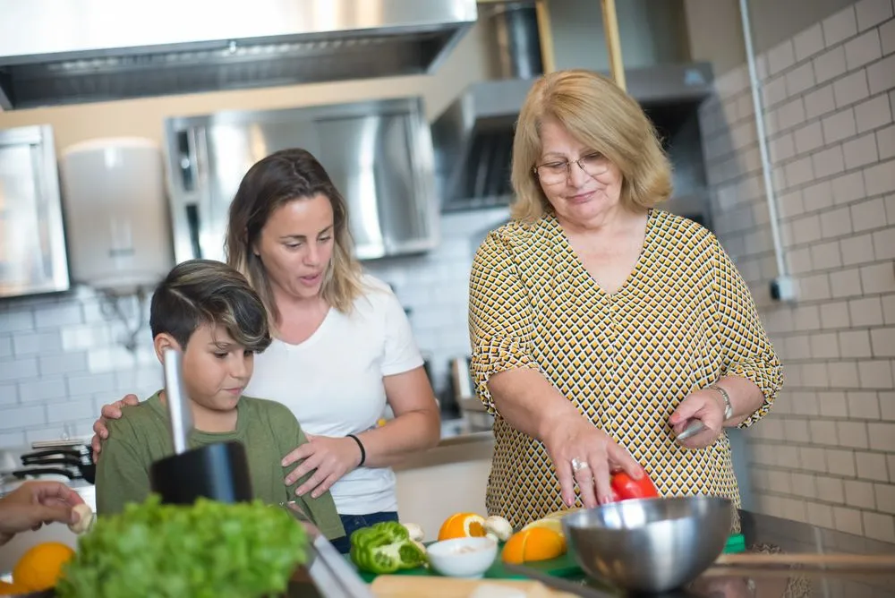

- When
- Thursday evenings
- Who it's for
- Over 16s
1,200meals cooked and shared this year
What happens
Each Thursday a local cook leads a relaxed session in the farm kitchen, using whatever came out of the ground that week. We cook, eat together and send everyone home with a jar.
Who it is for
Beginners welcome. We keep groups small, pay-what-you-can, and always cater for dietary needs.
What you take home
Confidence with fresh ingredients, a handful of recipes you can afford and a seat at a table that feels like home.
What to expect
A day at the farm
Thursday evenings. Open March to December.
Doors open
Aprons on and a look at what came in that day.
Meet the ingredients
Your cook introduces the harvest and the plan.
Chop, cook and taste
Pairs work on each dish, with plenty of tasting.
Eat together
Long table, everything we made.
Fill a jar
Everyone leaves with a jar of something preserved.